Speaker repair Glue specification:
Colour: zhanlida B(Transparent),zhanlida t( black)
Size / Liquid measurement: 15ML 50ML 80ML
Curing time: 30 Minutes Initial consolidation,24 Hours Full feature: high strength,high transparency,slow drying,soft,high elasticityspeak shelf life:12 months
scope of use of our speaker glue: bonding and assembly of loudspeakers(adhesive rubber edge,foam strip cone basin,dust cap etc.
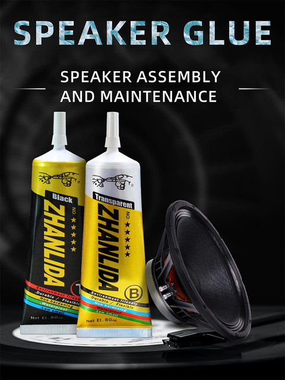
New upgrade comes with a fine needle sealing cover,which has strong sealing performance and long storage time
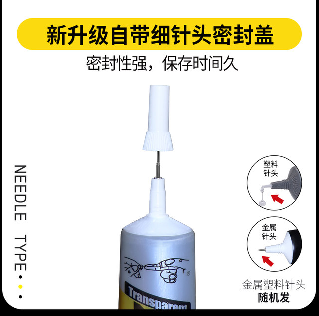
Various materials speaker Assembly and Repair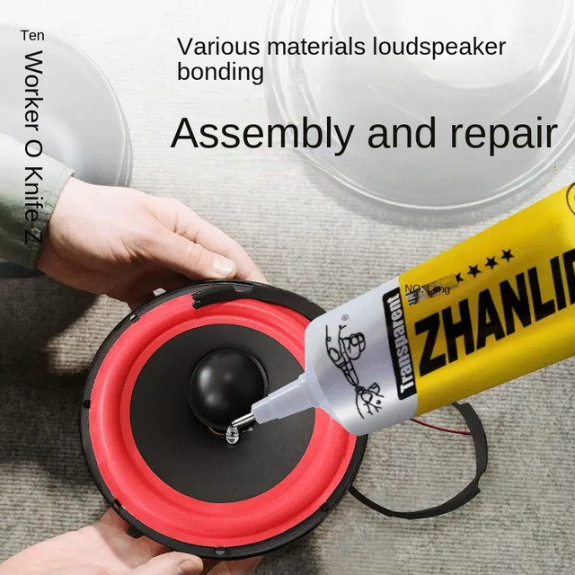
This speak glue can bond rubber edge,dust cap,foam sealing strip,the right photo is effect after bonding.
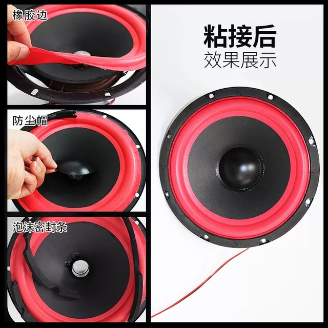
The application range of this speaker glue:
Horn cone basin and ball top made of various materials
Adhesive opening at the bonding point
Paper basin
Rupture of rubber edge and cone basin
Speaker assembly
Polypropylene basin
ceramic basin
Metal hard dust cap
Wool basin
Soft dust cap
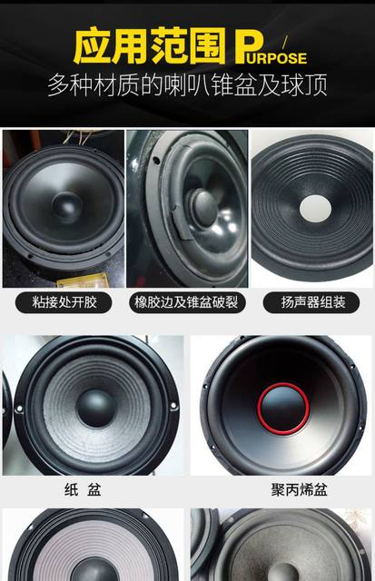
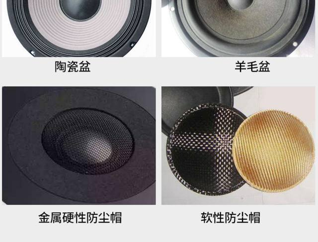
Almost no change in speaker sound quality after bonding with our speaker glue
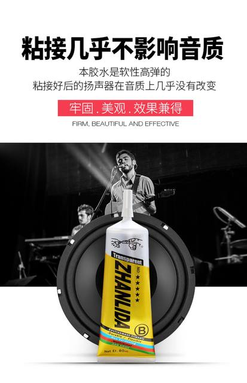
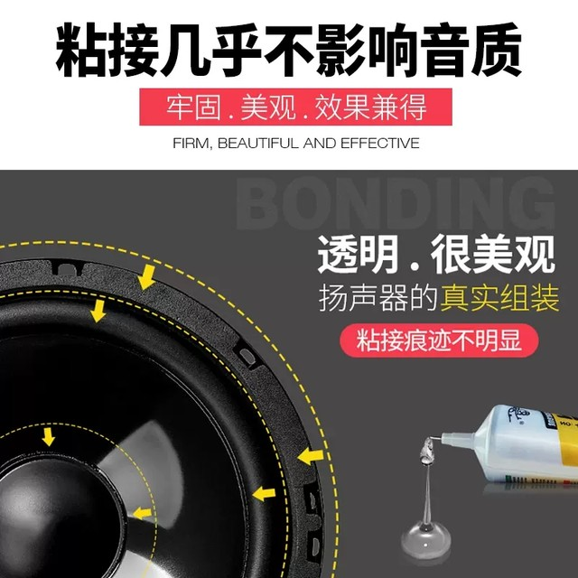
8 Advantages to creat one bottle high quality speaker glue
Mild and slow drying,Stable bonding
Uniform glue,Environmentally friendly and non corrosive
Not injuring the hand,Soft high elasticitc,Quality assurance,beautiful
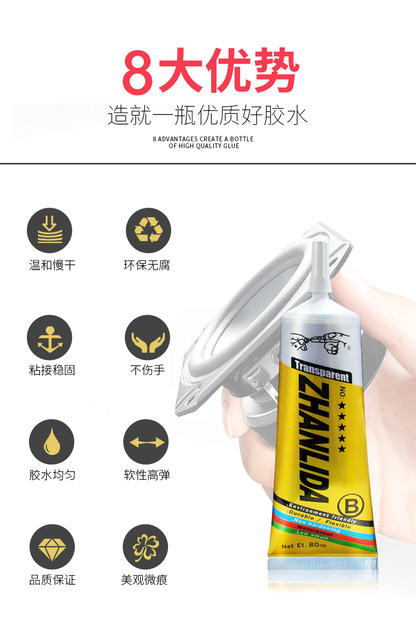
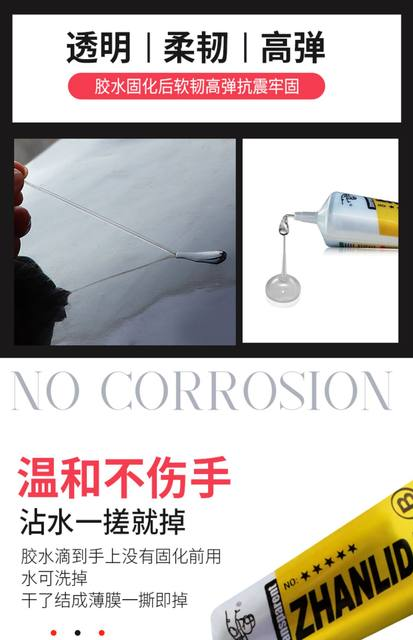
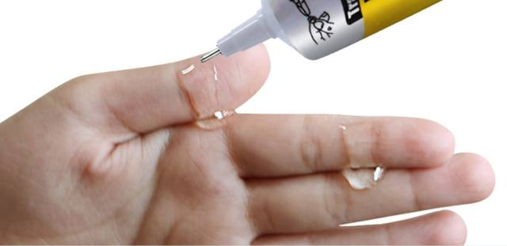
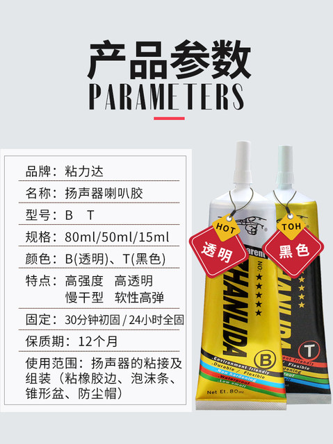
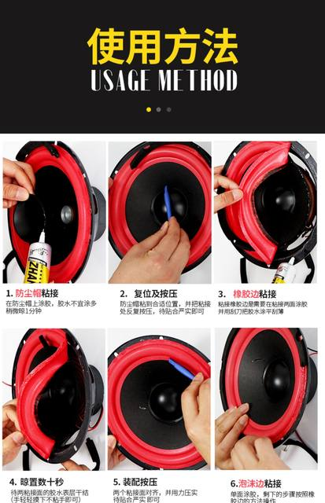
Usage Method
1. The dust cap should be glued onto the dust cap,and the glue should not be applied too much. Let it air for 1 minute
4. Let it stand for several seconds and wait for the adhesive surface of the two bonding surfaces to dry out (gently touch it with your hand and it will not stick)
2. Reset and press 3. Glue the rubber edge to the dust cap in a suitable position,and repeatedly press the adhesive on both sides of the adhesive. Once the adhesive is firmly attached,use a scraper to apply the adhesive evenly and thinly
Align the two bonding surfaces according to the 5 matching,and wait for the bonding to be firm and then move towards the direction
And compact with force
6. The foam edge is bonded and glued on one side. The remaining steps are as follows: rubber edge
what you need is what we do,for your health,every drop glue need safety support.